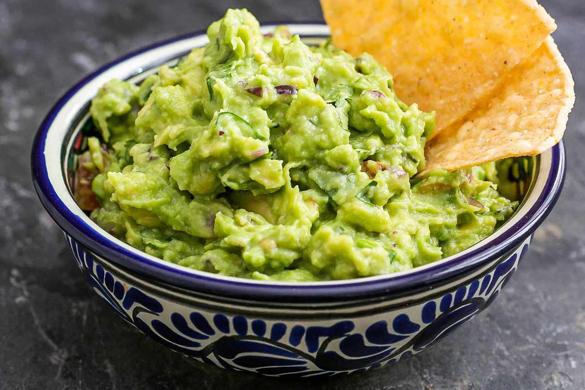

Guacamole

Grandma's Guac Recipe
This simple guac recipie works percect as a quick party snack or to add flavor to your mexican night.
The jalapenos and cilantro are optional to this recipie if they are not one of your favorites!
Ingredients:
- Avocado
- lime
- salt
- pepper
- tomato
- onion
- cilantro (optional)
- Jalapeno (optional)
Steps:
- Smash up avocados
- Dice up tomato and onion and add to smashed avocados
- Squeeze lime and add salt and pepper and stir up guac
- Optional: add in jalapeno and/or cilantro